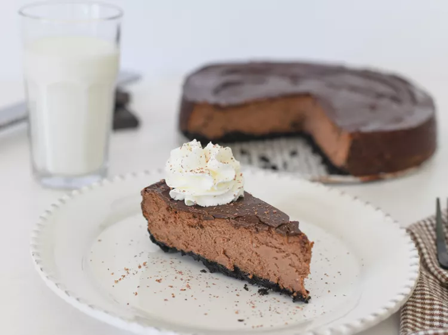

Chocolate Cheesecake

Description:
This chocolate cheesecake recipe has a chocolate cookie crust, creamy chocolate-cream cheese filling, and a rich chocolate topping for chocolaty goodness all the way through!
This mousse-like chocolate cheesecake recipe features a simple cookie crust and decadent ganache topping.
Ingredients:
- For the crust: Chocolate cookie crumbs, butter, and white sugar
- For the filling: Heavy whipping cream, chocolate chips, cream cheese, white sugar, cocoa powder, eggs, and vanilla extract
- For the topping: Chocolate chips, heavy whipping cream, and vanilla extract
Steps:
- Preheat the oven to 350 degrees F ( 175 degrees C). Lightly grease a 9-inch springform pan.
- To make the crust: Mix 1 1/2 cups chocolate wafer crumbs, melted butter, and 2 tablespoons sugar together in a small bowl until well combined; press onto the bottom and 1 1/2 inches up the sides of the prepared pan. Bake in the preheated oven for 10 minutes; allow to cool. Reduce oven temperature to 325 degrees F (165 degrees C).
- To make the filling: Heat 1/4 cup whipping cream and 1/4 cup chocolate chips in a small saucepan, stirring constantly, until chips are melted. Remove from heat and set aside.
- Beat cream cheese and 1 cup of sugar with an electric mixer in a large bowl until smooth. Add cocoa and beat well. Add eggs and beat on low until just blended. Stir in 1 teaspoon vanilla and melted chocolate-cream mixture until blended; pour filling over crust.
- Bake cheesecake in the preheated oven until edges are puffed and surface of cheesecake is firm except for a small spot in the center that will jiggle when the pan is gently shaken, about 45 to 50 minutes. Run the tip of a table knife around the edges of the pan, set the pan on a wire rack, and allow the cheesecake to cool at room temperature.
- To make the chocolate topping: Place 1 1/2 cups chocolate chips in a medium bowl. Heat 1/4 cup whipping cream and 1 teaspoon vanilla in a small saucepan, stirring continuously, until just before boiling; pour hot cream over chocolate chips and stir with a spoon until smooth. Spread over baked cheesecake and refrigerate for at least 4 hours to overnight.